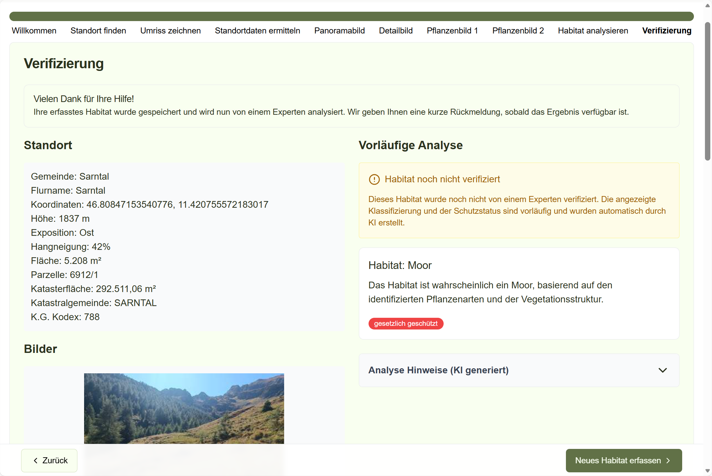
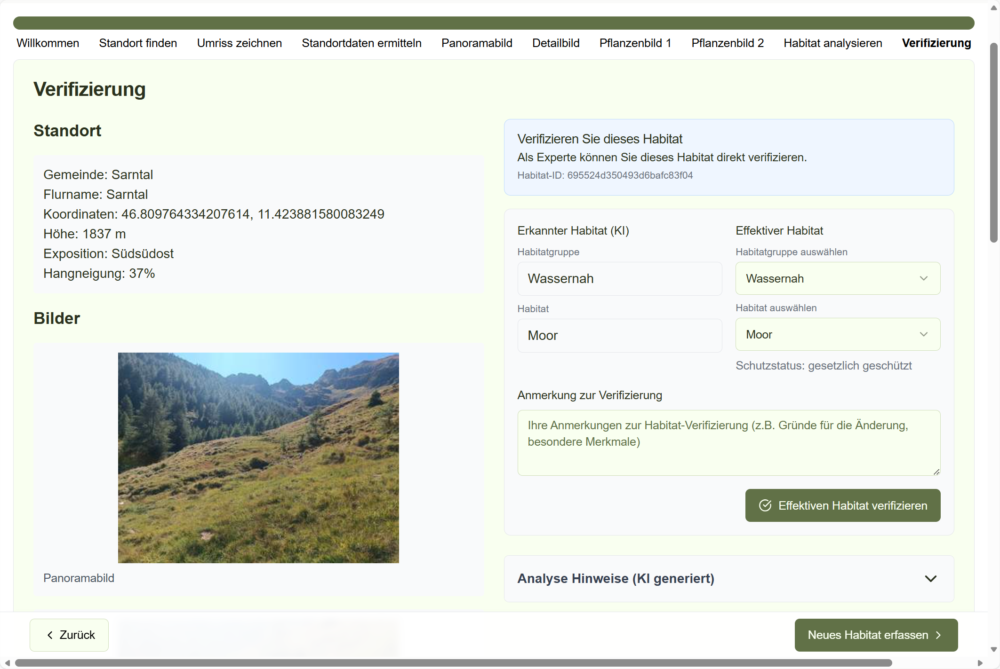

Verifizierungsphase (Abschluss)¶
Dieser Schritt ist der Abschluss der Erfassung. Hier sehen Sie eine kurze Bestätigung („Danke“) und Hinweise, wie es weitergeht.
Ansicht für Standardnutzer*innen (vorläufige Analyse)¶
Hier sehen Sie die Abschlussmeldung („Danke“) und den Hinweis, dass das Habitat noch nicht verifiziert ist. Die Klassifizierung und der Schutzstatus sind in diesem Moment vorläufig (KI‑Ergebnis) und werden später von Expert*innen geprüft.

Was tun?¶
- Prüfen Sie kurz, ob alles grundsätzlich passt.
- Klicken Sie unten auf „Neues Habitat erfassen“, wenn Sie gleich ein weiteres Habitat erfassen möchten.
Ansicht für Expert*innen (verifizieren)¶
Expertinnen können in diesem Schritt zusätzlich den Eintrag fachlich verifizieren* (bestätigen/ändern) und speichern.

Was tun? (kurz)¶
- Prüfen Sie Bilder, Standortangaben und Analyseergebnis.
- Bestätigen oder korrigieren Sie den Habitattyp (optional mit kurzem Kommentar).
- Verifizieren/Speichern.
Neues Habitat erfassen¶
Am Ende ist die Erfassung bereits gespeichert. Wenn Sie direkt weiter machen möchten, können Sie über „Neues Habitat“ (oben in der Navigation) eine neue Erfassung starten.
Tipp¶
Wenn Sie den Typ ändern: Kurz notieren, warum (1 Satz reicht). Das hilft der späteren Nachvollziehbarkeit.